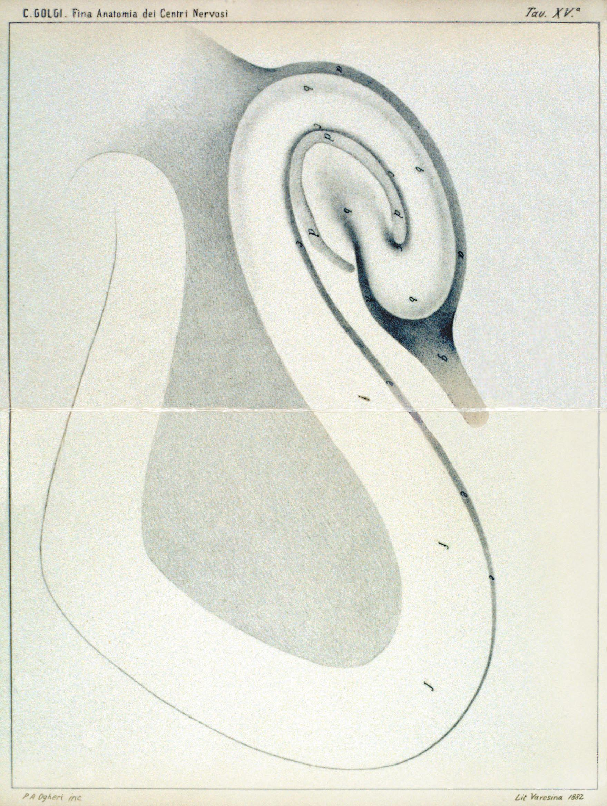
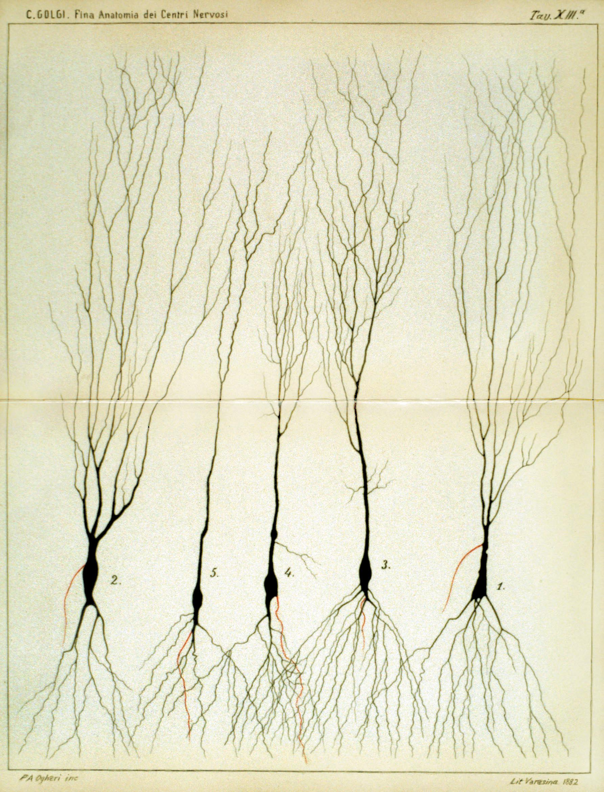
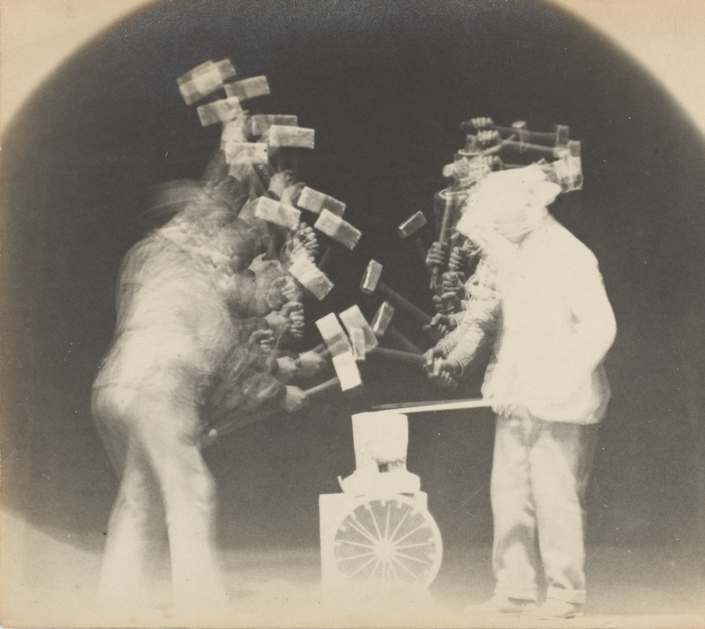
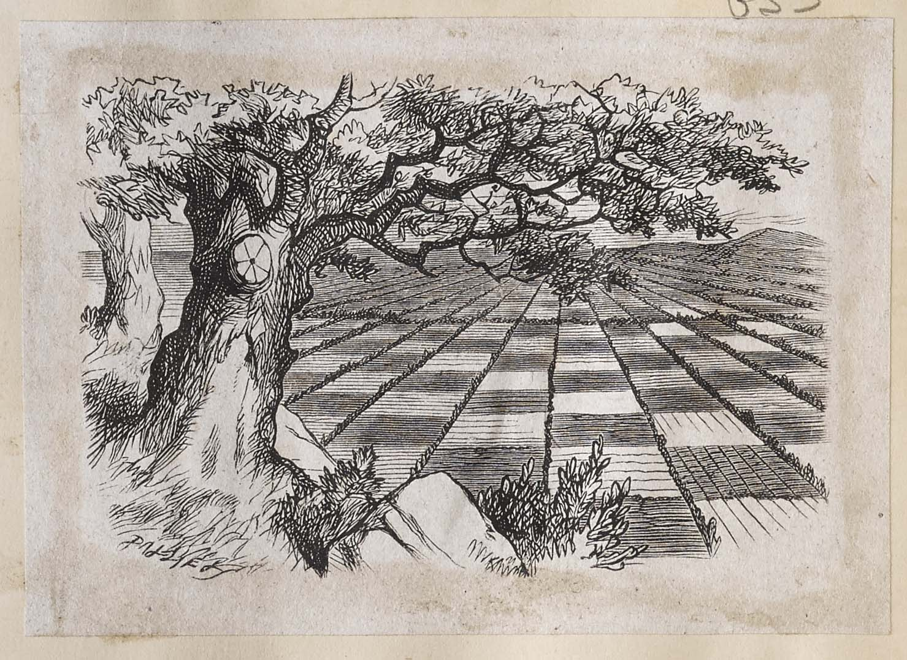

An embodied architecture combining dynamical associative networks & astrocytes with a curious developmental learning paradigm in a 3D virtual world.
To come: emergent sleep cycles replaying short term memory via calcium trace analogues evoke slow structural change, bridging localist growth with long term optimization.

Attemping to ground semantics and syntax, by clarifying the divide between interior and exterior worlds. Where meaning is an emergent property of coupling agent with environment.
What Husserl described as the structure of experience, and what neuroscience describes as the dynamics of perception, are two descriptions of the same process at different scales and from different vantage points.
When architectures can co-locate memory with processing in this way, efficiency gains are on orders of magnitude - inspired by localist dynamics and feedback patterns of the human brain.


Definitions from life, philosophy, & computation.